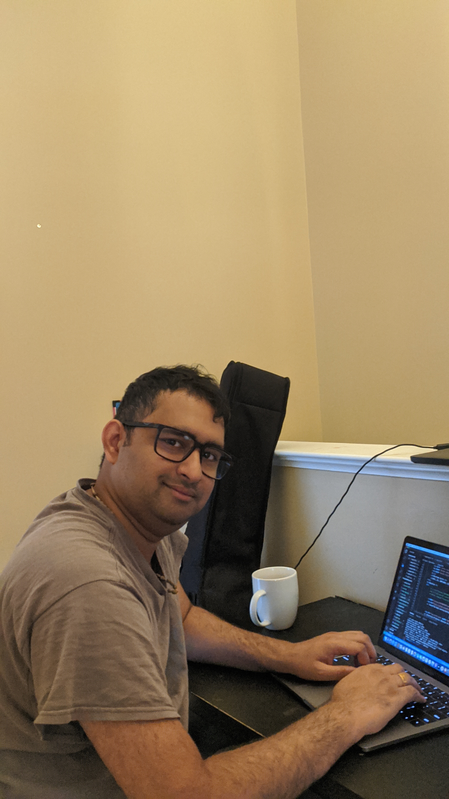

About Me
Hello! My name is Tony and i love building softwares that matters most to others. My interest in programming started back in 2006 with Mainframes. Later i got introduced to Python for automation and data analysis. Since then i started getting closer and closer to Python and its data analysis libraries.
I love working in AI projects and did a bunch of them. I believe that Mainframes modernization can be done using AI. Recently i did a project for created API's from Mainframe IDMS system. Natural Language Processing is my most interesting AI field.
I've had the previlage of working with start up's, huge corporations and mid-sized IT companies. These day's i am focusing more on helping my clients modernize there mainframe assests with the help of AI and API's. Some of the technologies that i have worked recently.


Education
Tensorflow Deep Learning Developer - Coursera
University Of Kerala: Bachelor Of Science in Physics